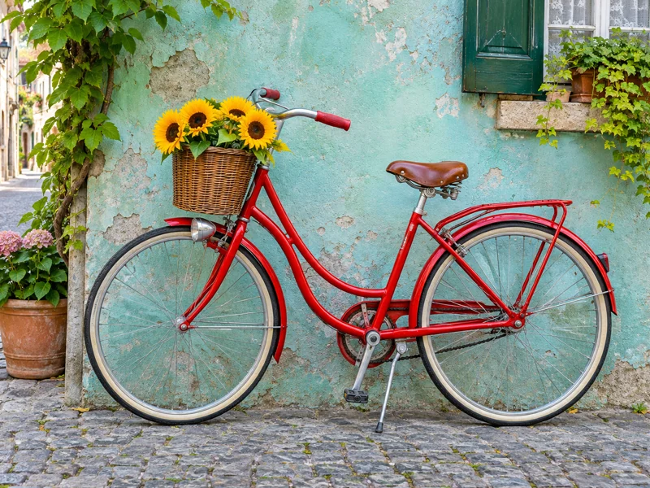
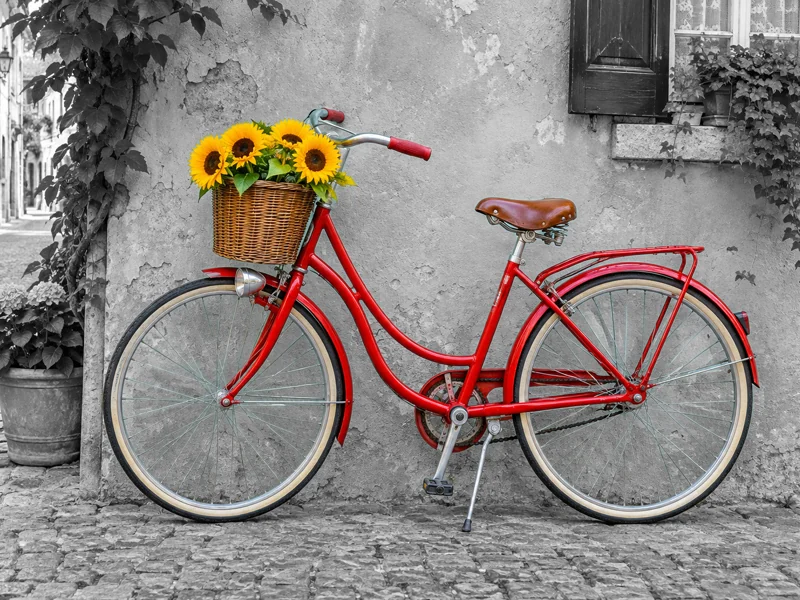
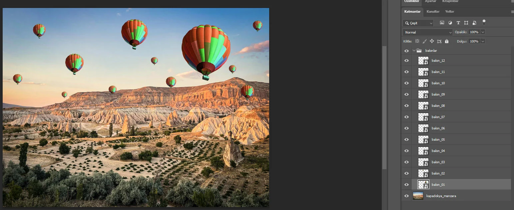
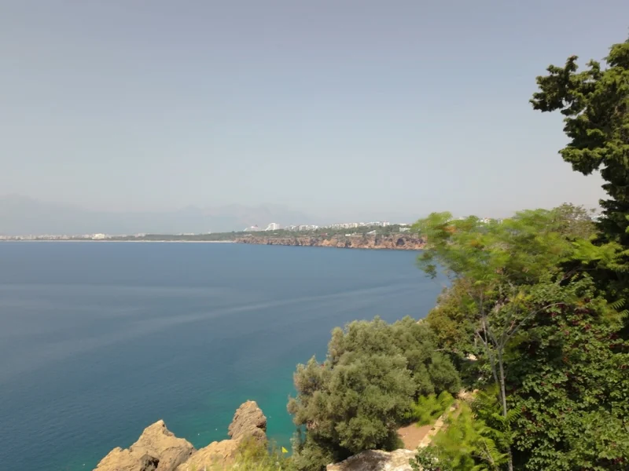

Adobe Photoshop · Kasım 2026
Grafik Animasyon 1 — Vize Çalışmaları
Adobe Photoshop ile altı çalışma: History Brush, ürün tanıtımı, karakalem renklendirme, Smart Object, Image Stack ve web arayüzü tasarımı.
Onur Can Orhan · Akdeniz Üniversitesi · Bilgisayar Programcılığı
Çalışmaların video anlatımı
Altı çalışmanın sonuçlarını ve düzenleme aşamalarını tanıtım videosunda izleyebilirsin.
YouTube’da izleVideo YouTube’da açılır.
History Brush
Siyah-beyaz sokakta renkli bisiklet
Fotoğrafı 4:3 oranında kırparak 800 × 600 piksel ve 72 dpi olarak hazırladım. Görüntüyü siyah-beyaza çevirdikten sonra kırmızı bisiklet ve ayçiçeklerini renkli bıraktım. Böylece gözün doğrudan ana konuya yönelmesini amaçladım.
Nasıl hazırladım?
Select Subject ile ana konuyu seçtim. History Brush kaynağını açılıştaki renkli duruma ayarlayıp seçili alanın renklerini geri boyadım. Çevreyi siyah-beyaz bırakarak renk kontrastı oluşturdum.
Kırpma · Select Subject · History Brush · Seçici renklendirme


Ürün Tanıtımı
NOVA AUDIO kulaklık afişi
Kırmızı kulaklığı odak noktasına alan, koyu zeminli bir ürün tanıtım afişi hazırladım. “Sesi hisset.” başlığını, ürün özelliklerini ve ses halkalarını aynı kompozisyonda bir araya getirdim.
Nasıl hazırladım?
Kulaklığı Select Subject ile arka plandan ayırdım. Ürün, gölge, yansıma, parlaklık ve zemin için ayrı katmanlar kullandım. Dikey çevirdiğim ürün kopyasını bir katman maskesi ve beyazdan siyaha gradyan ile soldurarak yansımayı oluşturdum; yazıları ve süsleri grupladım.
Dekupe · Katman maskesi · Gradyan · Tipografi · Yansıma


Karakalem Renklendirme
Batman çizimini katmanlarla renklendirme
Karakalem çizimini, konturları koruyarak renklendirdim. Kostüm, pelerin, maske, kemer ve arka planın renklerini ayrı ayrı kontrol edebileceğim bir yapı kurdum.
Nasıl hazırladım?
Her bölgeyi seçip kendi katmanında boyadım ve seçimleri alpha kanallarına kaydettim. Çizgiler katmanını en üstte Multiply modunda tuttum. Burn ve Dodge araçlarıyla gölge ve ışık ekleyerek düz renkleri hacimlendirdim.
Alpha kanalları · Multiply · Dodge · Burn · Katman düzeni


Smart Object
Kapadokya: tek kaynaktan 12 balon
Kapadokya manzarasına aynı Smart Object’in 12 örneğini yerleştirdim. Farklı ölçek ve opaklık değerleriyle yakındaki ve uzaktaki balonlar arasında derinlik oluşturdum.
Nasıl hazırladım?
Tek balonu dekupe edip Smart Object’e dönüştürdüm. Örneklerini balonlar grubunda topladım. Edit Contents ile kaynak içeriğe Hue/Saturation düzenlemesi uyguladığımda 12 örnek birlikte güncellendi. Orijinal balon katmanını gizli olarak korudum.
Smart Object örnekleri · Edit Contents · Hue/Saturation · Derinlik




Image Stack
Antalya sahilinde hareketli tekneyi temizleme
Sabit kamerayla çekilmiş Antalya sahil görüntüsünden 25 kareyi tek belgede birleştirdim. Amaç, manzarayı koruyarak hareket eden tekneyi görüntüden kaldırmaktı.
Nasıl hazırladım?
800 × 600 piksel ve 72 dpi kareleri katmanlar olarak yükledim. Katmanları tek bir Smart Object’e dönüştürüp Stack Mode > Median uyguladım. Farklı karelerde yer değiştiren tekne elenirken sabit kıyı ve manzara korundu.
25 kare · Smart Object · Stack Mode: Median · Hareketli nesne temizleme


Web Arayüzü Hazırlama
Pera Müzesi için 960 grid arayüz çalışması
Pera Müzesi ana sayfasını referans alarak Photoshop’ta bir arayüz tasarımı hazırladım. Taslak çizimden başlayıp 12 sütunlu 960.gs ızgarası üzerinde içerik hiyerarşisi ve alternatif yerleşimler çalıştım.
Nasıl hazırladım?
960_grid_12_col.psd şablonunu kullandım; taslağı 960_sketch_12_col üzerinde çizdim. Üst bilgi, menü, manşet, etkinlikler, sosyal bant, koleksiyon ve alt bilgiyi grupladım. Layer Comps ile Klasik, Kenar Çubuğu ve Etkinlikler Önce adlı üç yerleşimi kaydettim.
960.gs · 12 sütun · Taslak · Layer Comps · Üç alternatif yerleşim


Eğitim amaçlı arayüz çalışması. Referans: Pera Müzesi · 960.gs
Bu projede bir araya getirdiklerim
Bu altı çalışma; seçim, maskeleme, katman düzeni, renk, tipografi ve kaynağı koruyan düzenleme tekniklerini farklı amaçlarla kullanmamı sağladı. Öncesi/sonrası görselleri sonuçları; Smart Object ve arayüz çalışmalarındaki ek görseller ise katman yapısını ve alternatif yerleşimleri gösteriyor.
Projelere dön